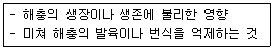
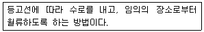
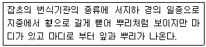

식물보호기사 (2019-09-21 기출문제)
1과목: 식물병리학
1. 다음 중 세포벽을 가지고 있지 않은 식물 병원균은?
- Xanthomonas속
- Phytoplasma속
- Phytophthora속
- Xyrella 속
(정답률: 73%)

2. 다음 중 기주체에 침입할 때 병원균이 분비하는 효소로 가장 적절한 것은?
- Victorin
- Fusaric Acid
- Cutinase
- Tabtoxin
(정답률: 52%)
3. 다음중 생물적 방제제로 사용되는 진균은?
- Pseudomonas속
- Trichoderma속
- Bacillus속
- Streptomyces속
(정답률: 53%)
4. 세균에 의한 병이 아닌 것은?
- 토마토 풋마름병
- 사과 뿌리혹병
- 감자 더뎅이병
- 배추 무사마귀병
(정답률: 53%)
5. 식물체가 감염되었을 때 주로 모자이크 증상을 나타내는 병원체는?
- 진균
- 세균
- 바이러스
- 파이토 플라스마
(정답률: 87%)
6. 다음 중 밀 줄기녹병의 중간기주로 가장 적절한 것은?
- 매발톱나무
- 개나리
- 향나무
- 사시나무
(정답률: 74%)
7. 알코올 냄새로 진단할 수 있는 식물병은?
- 수박 덩굴쪼김병
- 콩 탄저병
- 사과나무 부란병
- 배나무 줄기마름병
(정답률: 84%)
8. 다음 중 접합균류에 속하는 곰팡이에 의해 발생하는 병으로 가장 적절한 것은?
- 고구마 검은무늬병
- 감자 둘레썩음병
- 고구마 무름병
- 감자 더뎅이병
(정답률: 52%)
9. 다음 중 비생물성 병원에 해당되는 것은?
- 산업폐기물
- 파이토플라스마
- 말무리
- 유사균류
(정답률: 85%)
10. 소나무 혹병의 하포자와 동포자의 월동장소로 가장 적절한 것은?
- 졸참나무
- 참취
- 향나무
- 야생까치밥나무
(정답률: 69%)
11. 식물병원균이 이종기생을 하는 경우에 생활환을 완성하기 위하여 기주식물을 바꾸어 생활하는 것을 무엇이라 하는가?
- 기생
- 감염
- 기주교대
- 발병
(정답률: 91%)
12. 보리 붉은곰팡이균은 진균의 어떤 균류에 속하는가?
- 불완전균류
- 접합균류
- 자낭균류
- 담자균류
(정답률: 49%)
13. 식물병을 방제하기 위한 경종적 방법과 가장 거리가 먼 것은?
- 윤작
- 번식기관의 온탕 처리
- 무병종묘 사용
- 저항성 품종 재배
(정답률: 79%)
14. 식물 바이러스 입자를 구성주요 고분자는?
- 피막과 핵
- 새포벽과 세포질
- 골지체와 RNA
- 핵산과 단백질껍질
(정답률: 82%)
15. 병든 부위에서 악취가 나는 병은?
- 벼 도열병
- 배추 무름병
- 딸기 흰가루병
- 감자 탄저병
(정답률: 84%)
16. 다음 중 목재를 썩히는 대부분의 목재부후균은 어디에 속하는가?
- 세균
- 버섯
- 바이러스
- 선충
(정답률: 72%)
17. 다음 중 Phytopthora속 균의 전형적인 전반방법은?
- 종자에 의한 전반
- 곤충에 의한 전반
- 씨감자에 의한 전반
- 비바람에 의한 전반
(정답률: 54%)
18. 뿌리혹병(근두암종병)을 일으키는 병원균으로 가장 적절한 것은?
- 진균
- 세균
- 바이러스
- 파이토플라스마
(정답률: 66%)
19. 박테리오파지의 기주특이성을 이용하여 진단할 수 있는 병으로 가장 적절한 것은?
- 벼 흰잎마름병
- 보리 겉깜부기병
- 벼 줄무늬잎마름병
- 밀 속깜부기병
(정답률: 46%)
20. 벼 흰잎마름병의 주요 제1차 전염원이 되는 식물로 가장 적절한 것은?
- 흰명아주
- 돌 피
- 여뀌
- 겨풀
(정답률: 57%)
2과목: 농림해충학
21. 다음 중 소나무좀은 수목의 어느 부분을 주로 가해하는가?
- 잎
- 구과
- 뿌 리
- 수간(줄기)
(정답률: 77%)
22. 다음에서 설명하는 것은?

- 비선호성
- 항충성
- 내 성
- 회피
(정답률: 68%)
23. 다음 중 벼 재배 시 기온이 낮은 해에 발생하여 피해를 주는 저온성 해충으로 가장 적절한 것은?
- 이화명나방
- 끝동매미충
- 흰등멸구
- 벼애잎굴파리
(정답률: 46%)
24. 도둑나방의 피해 증상으로 가장 거리가 먼 것은?
- 부화유충이 떼를 지어 잎 뒷면의 잎살을 먹는다.
- 배추，양배추의 결구 속으로 파고 들어가 먹는다.
- 배추 뿌리가 지제부(지접부)에서 잘린다.
- 잎이 불규칙한 그물 모양으로 된다.
(정답률: 58%)
25. 잎을 가해하는 청동풍뎅이의 월동에 대한 설명으로 가장 적절한 것은?
- 난상태로 땅속에서 월동한다.
- 유충태로 땅속에서 월동한다.
- 성충태로 지피물에서 월동한다.
- 번데기 상태로 잎을 먹고 월동한다.
(정답률: 55%)
26. 기주식물에 바이러스병을 매개하는 해충으로 가장 옳은 것은?
- 콩잎말이명나방
- 독나방
- 아메리카잎굴파리
- 복숭아혹진딧물
(정답률: 77%)
27. 다음 중 천공성 해충으로 가장 적절하지 않은 것은?
- 소나무좀
- 왕소나무좀
- 어스렝이나방
- 박쥐나방
(정답률: 53%)
28. 날개가 전혀 발생 되지 않는 무시아강에 속하는 곤충으로 가장 적절한 것은?
- 벼룩
- 이
- 빈대
- 좀
(정답률: 52%)
29. 곤충의 체내조직에 산소를 운반하는 곳으로 가장 적절한 것은?
- 폐쇄 혈관계
- 개방 혈관계
- 기관계
- 혈구
(정답률: 54%)
30. 미국선녀벌레의 가해 양상에 대한 설명으로 가장 적절한 것은?
- 잎을 갉아 먹는다.
- 과일에 구멍을 내며 피해를 준다.
- 줄기에 구멍을 뚫고 가해한다.
- 잎, 줄기를 흡즙한다.
(정답률: 52%)
31. 거북밀깍지벌레의 월동태로 가장 적절한 것은?
- 성충
- 알
- 약충
- 번데기
(정답률: 43%)
32. 다음 중 해충의 불임성을 유도하는 방법으로 가장 적절한 것은?
- 방사선 이용법
- 소살법
- 경운법
- 포살법
(정답률: 79%)
33. 포도나무의 줄기를 가해하는 해충으로만 나열된 것은?
- 박쥐나방, 포도유리나방
- 포도 쌍점 매미충，포도 호랑하늘소
- 포도 금빛 잎벌레，포도 뿌리혹벌레
- 으름 나방, 무궁화밤나방
(정답률: 70%)
34. 유아등에 해충을 모이게 하여 잡아 죽이는 방제 방법은?
- 재배적 방제
- 생태적 방제
- 물리적 방제
- 화학적 방제
(정답률: 70%)
35. 다음 중 땅강아지는 어느 목에 속하는 해충인가?
- 딱정벌레목
- 강도래목
- 잠자리목
- 메뚜기목
(정답률: 50%)
36. 본답 초기에 벼를 홉즙하여 가해하며, 줄무늬잎 마름 병과 검은줄무늬오갈병의 바이러스를 매개하는 해충으로 가장 적절한 것은?
- 애멸구
- 흰등멸구
- 벼멸구
- 끝동매미충
(정답률: 67%)
37. 벼물바구미에 대한 설명으로 가장 거리가 먼 것은?
- 성충은 잎을 가해하고，유충은 뿌리를 가해한다.
- 단위생식을 한다.
- 외래해충이다.
- 유충으로 월동한다.
(정답률: 49%)
38. 곤충의 페로몬에 대한 설명으로 옳은 것은?
- 체내에서 소량으로 만들어져 체외로 방출되며，같은 종의 다른 개체에 정보 전달수단으로 이용된다.
- 체내에서 대량으로 만들어져 체외로 방출되며，같은 종의 다른 개체에 정보 전달수단으로 이용된다.
- 체내에서 소량으로 만들어져 체외로 방출되며，다른 종과의 정보 전달수단으로 이용된다.
- 카이로몬은 페로몬에 속한다.
(정답률: 77%)
39. 다음 중 우리나라에서 겨울 동안 월동을 하지 못하는 해충으로 가장 적절한 것은?
- 이화명나방
- 혹명나방
- 벼물바구미
- 담배나방
(정답률: 49%)
40. 유시아강은 날개를 갖고 있거나 2차적으로 날개가 없는 곤충이다. 날개를 접을 수 있는 것을 신시군으로 구분하는데，이 중신시군의 내시류에 속하지 않는 목은?
- 풀잠자리목
- 총채벌레목
- 딱정벌레목
- 파리목
(정답률: 51%)
3과목: 재배학원론
41. 광보상점에 대한 설명으로 가장 옳은 것은?
- 음생식물에 비하여 양생식물의 광보상점이 낮다.
- 음생식물에 비하여 양생식물의 광보상점이 높다.
- 음생식물과 양생식물의 광보상점은 동일하다.
- 음생식물 및 양생식물은 광보상점이 없다.
(정답률: 75%)
42. 종자의 퇴화를 방지하기 위하여 품종 간에 격리재배를 하는 이유는?
- 자연교잡을 방지하기 위하여
- 병 발생을 억제하기 위하여
- 유전적 교섭을 증진시키기 위하여
- 환경변이를 줄이기 위하여
(정답률: 78%)
43. 무배유종자에 해당하는 작물로만 나열된 것은?
- 콩, 팥
- 옥수수，벼
- 벼, 보리
- 밀, 보리
(정답률: 75%)
44. 노후답의 재배대책으로 가장 거리가 먼 것은?
- 조기재배
- 황산근 비료의 시비
- 덧거름 중점의 시비
- 엽면시비
(정답률: 50%)
45. 다음 중 벼의 관수해(冠水害)가 가장 큰 시기는?
- 출수개화기
- 묘대기
- 분얼 초기
- 등숙기
(정답률: 54%)
46. 다음 중 저장 중에 종자가 발아력을 상실하는 가장 큰 원인은?
- 호흡 억제
- 휴면 유도
- 원형 단백질의 응고
- 저장 양분의 증가
(정답률: 60%)
47. 다음 중 작물생육의 필수원소로 가장 거리가 먼 것은?
- K
- Al
- Ca
- S
(정답률: 80%)
48. 다음에서 설명하는 것은?

- 보더관개
- 수반관개
- 일류관개
- 다공관관개
(정답률: 71%)
49. 벼의 작물생육 초기부터 출수기에 걸쳐 냉온을 만나 출수가 늦어져 등숙불량을 초래하는 냉해는?
- 지연형 냉해
- 장해형 냉해
- 병해형 냉해
- 혼합형 냉해
(정답률: 65%)
50. 연작의 해가 가장 적은 작물로만 나열된 것은?
- 미나리，양배추
- 수박，가지
- 참외，우엉
- 고추，오이
(정답률: 57%)
51. 다음 중 규소에 대한 설명으로 가장 옳지 않은 것은?
- 규질화를 이루어 병에 대한 저항성을 높인다.
- 수광 태세를 좋게 한다.
- 증산을 경감하여 가뭄해를 줄이는 효과가 있다.
- 화본과 작물보다 콩과 작물에 함량이 매우 많다.
(정답률: 67%)
52. 피자식물의 종자 형성에 대한 설명으로 가장 옳지 않은 것은?
- 중복 수정한다.
- 정핵과 난세포가 결합하여 배를 형성 한다.
- 정핵과 극핵이 결합하여 배유를 형성한다.
- 배는 3n이고，배유는 2n이다.
(정답률: 73%)
53. 다음 중 붕소의 생리작용에 대한 설명으로 가장 옳지 않은 것은?
- 체내 이동성이 용이하다.
- 결핍증은 저장기관에 나타나기 쉽다.
- 결핍 시 수정，결실이 나빠진다.
- 촉매 또는 반응 조정물질로 작용한다.
(정답률: 66%)
54. 다음 중 식물체 내에서 이동이 가장 용이한 원소는?
- Ca
- Mg
- S
- Mn
(정답률: 55%)
55. 양열 재료의 c/n율이 가장 낮은 것은?
- 보릿짚
- 감자
- 볏짚
- 앨팰퍼
(정답률: 51%)
56. 다음 중 내습성이 가장 약한 작물로만 나열된 것은?
- 옥수수, 밭벼，율무
- 택사, 벼, 미나리
- 고추, 갑자, 메밀
- 당근, 양파，파
(정답률: 59%)
57. 열해에 대한 대책으로 가장 거리가 먼 것은?
- 질소질 비료를 자주 시용한다.
- 관개를 통해 지온을 낮춘다.
- 밀식을 피한다.
- 환기를 통해 고온을 히피한다.
(정답률: 81%)
58. 다음 중 요수량이 가장 적은 작물은?
- 호박
- 완두
- 기 장
- 클로버
(정답률: 62%)
59. 기지가 문제되지 않는 과수로만 나열된 것은?
- 복숭아나무, 배나무
- 사과나무, 포도나무
- 앵두나무，쁨나무
- 무화과나무，망고나무
(정답률: 59%)
60. 벼의 생육단계에서 중간낙수가 필요한 시기는?
- 모내기 준비
- 이앙기〜활착기
- 수잉기~유숙기
- 최고분얼기〜유수형성기
(정답률: 55%)
4과목: 농약학
61. 식물의 생육단계 중 약해의 염려가 가장 적은 시기는?
- 휴면기
- 영양생장기
- 생식생장기
- 개화기
(정답률: 77%)
62. 백합의 신장 억제 및 배추의 생장 억제에 주로 사용되는 생장 조정제는?
- 디니코나졸 액상수화제
- 지베렐린 수용제
- 에테폰 액제
- 루톤분제
(정답률: 56%)
63. 농약의 분류 중 유효성분 조성에 따른 분류에 해당하는 것은?
- 유기인제
- 살충제
- 살균제
- 유인제
(정답률: 77%)
64. 유기인계 살충제가 아닌 것은?
- 파라티온(Parathion)
- 다이아지논(Diazinon)
- 디클로르보스(Dichlorvos)
- 메소밀(Methomyl)
(정답률: 53%)
65. 다음 중 밀폐된 공간에서 사용하도록 설계된 제형은?
- 훈연제
- 입 제
- 분제
- 수화제
(정답률: 81%)
66. 다음 중에서 천연 성분의 살충제가 아닌 것은?
- 피레트린(Pyrethrin)
- 파라티온(Parathion)
- 니코틴(Nicotine)
- 로테논(Rotenone)
(정답률: 65%)
67. 피레트린(Pyrethrin) 성분을 함유하는 천연 살충용 식물은?
- 송 지
- 테리스
- 제충국
- 연 초
(정답률: 79%)
68. 현수성과 수화성을 이용한 약제는?
- 유제
- 용액
- 수화제
- 수용제
(정답률: 75%)
69. 보르도액의 주성분에 해당하는 것은?
- 벤젠(c6h6)
- 다황산칼슘(CaS5)
- 황산구리(CuSO4ㆍ 5H2O)
- 페닐초산수은(HgㆍOOCㆍCH3)
(정답률: 74%)
70. 다음 중 농약의 화학적 변화라고 보기 어려운 것은?
- DDVP 유제가 수산화이온（0H)에 의해 유기산과 페놀류 등으로 분해된다.
- 만코제브 수화제가 대기 중에서 분해된다.
- 토양 중의 금속이 농약과 반응하여 농약을 분해한다.
- 미생물에 의한 농약의 분해는 환경오염을 방지한다.
(정답률: 66%)
71. 다음 중 농약의 보조제（Supplement Agent）에 해당하는 것은?
- 유인제
- 식독제
- 기피제
- 유화제
(정답률: 68%)
72. 제초제에 대한 설명으로 틀린 것은?
- 세록시딤은 선택성 제초제이다.
- 글루포시네이트암모늄은 비선택성 제초제이다.
- 제초기능에 있어 선택성이 있는 것과 없는 것이 있다.
- 식물의 종류에 관계없이 모든 식물에 해를 나타내는 것을 선택성 제초제라고 한다.
(정답률: 82%)
73. 농약의 제형별 약어가 잘못 연결된 것은?
- 유제 – EC
- 액제 - SL
- 액상수화제 – SP
- 수화제 - WP
(정답률: 48%)
74. 보통독성 농약이 고체일 경우에 급성경구 독성의 LD50（mg/kg）은?
- 5~50
- 50-500
- 200~1,000
- 1,000이상
(정답률: 57%)
75. 가스상태로 병해충에 접촉시켜 방제효과를 거두는 훈증제가 갖추어야 할 성질이 아닌 것은?
- 독성이 커야 한다.
- 휘발성이 커야 한다.
- 비인화성이어야 한다.
- 확산성이 있어야 한다.
(정답률: 73%)
76. 메프 유제 50%를 0.⑤%로 희석하여 100L를 살포하려고 할때 소요약량은 약 몇 mL인가?(단, 비중은 1.008이다)
- 99.2
- 109.2
- 119.2
- 129.2
(정답률: 53%)
77. 다음 중 살포장비에 의한 약해에 가장 큰 영향을 미치는 원인은?
- 살포장비의 미세척
- 살포장비의 종류
- 살포장비의 구조
- 살포장비의 조작방법
(정답률: 79%)
78. 농약의 안전사용기준을 설정하는 주된 목적은?
- 독성을 없애기 위하여
- 약효를 증대시키기 위하여
- 농산물 중 잔류량이 허용기준을 초과하지 않도록하기 위하여
- 살포하는 농민의 편의성을 향상시키기 위하여
(정답률: 79%)
79. 농약의 물리적 성질 중 현수성(Suspensi bility)의 의미를 가장 잘 설명한 것은?
- 농약을 물에 가했을 때 유입자가 균일하게 분산하여 유탁액을 만드는 성질이다.
- 농약을 물에 가했을 때 균일하게 분산，부유하는 성질을 나타낸다.
- 농약을 물에 가했을 때 물과 약제와의 친화도를 나타낸다.
- 농약을 물에 가하여 작물에 뿌렸을 때 잘 부착되는 성질을 말한다.
(정답률: 59%)
80. 농약의 자체검사 및 신청검사의 기준에 대한 설명으로 틀린 것은?
- 분제 및 입제의 최대 모집 단수량은 50톤이다.
- 모집단의 소포장 수량 5,000개 이하에 대한 발취개체 수량은 50개이다.
- 자체검사필증의 부착 및 표시상태는 뽑아낸 시료 전량에 대하여 외관 검사를 한다.
- 신청 검사를 하여 합격된 농약은 농약의 품질관리를 위하여 반드시 직권검사를 하여야 한다.
(정답률: 59%)
5과목: 잡초방제학
81. 콩, 옥수수 등 여름작물 포장에 가장 많이 발생하는 잡초는?
- 가 래
- 바랭이
- 매자기
- 나도겨풀
(정답률: 65%)
82. 다음 중 우리나라에 발생되는 월년생 잡초로만 나열된 것은?
- 여뀌，나도겨풀
- 명아주，참새피
- 향부자, 강아지풀
- 뚝새풀，별꽃
(정답률: 57%)
83. 잡초허용 한계밀도에 대한 설명으로 가장 적절한 것은?
- 잡초밀도가 어느 수준 이상으로 존재하면 작물 수량이 현저하게 감소되는 수준
- 잡초밀도가 어느 수준 이상으로 존재하면 제초제 사용을 급격하게 증가시켜야 하는 수준
- 잡초밀도가 어느 수준 이상으로 존재하면 시비량을 증가하는 것이 좋은수준
- 잡초밀도가 어느 수준 이상으로 존재하면 작물 수확을 포기하는 것이 좋은 수준
(정답률: 80%)
84. 잡초의 식물학적 분류순서로 가장 옳은 것은?
- 계-문-강-목-과-속-종
- 계-속-문-강-목-과-종
- 과-계-속-문-강-목-종
- 속-문-강-과-계-목-종
(정답률: 82%)
85. 다음 중 우리나라 사료용 옥수수 재배포장에 대량 발생되어 문제가 되고 있는 외래 잡초는?
- 어저귀
- 바랭이
- 알방동사니
- 여 뀌
(정답률: 42%)
86. 다음 중 잡초의 특징으로 가장 거리가 먼 것은?
- 휴면성이 없다.
- 영양생장기에 빠른 생장특성을 보인다.
- 불연속적이며 자발적으로 조절하는 발아성을 보인다.
- 생장조건에 따라 지속적인 종자생산력이 있다.
(정답률: 79%)
87. 다음 중 외국에서 유입된 잡초로만 나열된 것은?
- 애기달맞이꽃，서양민들레
- 망초，너도방동사니
- 쇠뜨기，올미
- 올방개，광대나물
(정답률: 75%)
88. 생활사에 따른 잡초의 분류로 가장 옳지 않은 것은?
- 1년생
- 월년생
- 4년생
- 다년생
(정답률: 81%)
89. 다음 중 형태에 따른 분류가 잘못된 것은?
- 로제트형 : 민들레
- 총생형 : 뚝새풀
- 포복형 : 메꽃
- 직립형 : 사마귀풀
(정답률: 45%)
90. 다음 중 벼와 광 경합이 가장 큰 식물 종은?
- 향부자
- 물피
- 메꽃
- 별꽃
(정답률: 75%)
91. 다음 중 페녹시계 제초제로 가장 옳은 것은?
- GA3
- Butachlor
- 2,4-D
- Molinate
(정답률: 76%)
92. 방동사니류 잡초에 대한 설명으로 가장 옳지 않은 것은?
- 잎 끝이 뾰족하고 소수（小德）에 꽃이 착생한다.
- 줄기가 삼각형 모양이다.
- 습지에서도 자생한다.
- 잎이 둥글고 크며，잎맥이 그물 모양이다.
(정답률: 65%)
93. 다음 중 작물과 잡초 사이의 경합과 가장 거리가 먼 것은?
- 광
- 온도
- 수분
- 양분
(정답률: 72%)
94. 돌피의 학명으로 가장 옳은 것은?
- Leerisa japonica
- Monochoria vaginalis
- Cyperus difformis
- Echinochloa crus-galli
(정답률: 45%)
95. 다음 중 잡초의 형태적 특성에 따라 분류할 때 같은 초종으로만 나열된 것은?
- 바랭이，물달개비，깨풀
- 피，뚝새풀，물참새피
- 피，매자기，방동사니
- 물참새피，쇠비름，방동사니
(정답률: 56%)
96. 다음 중 주로 광합성을 억제하는 제초제로 가장 옳은 것은?
- IPA
- Simazine
- Thiobencarb
- 2,4-D
(정답률: 52%)
97. 다음 중 잡초의 초형이 가장 작은 것은?
- 가막사리
- 피
- 올방개
- 쇠털골
(정답률: 42%)
98. 다음 중 암조건에서 발아가 가장 잘되는 잡초종자는?
- 쇠비름
- 바랭이
- 강피
- 냉이
(정답률: 72%)
99. 논에 발생하는 1년생 잡초로 가장 옳은 것은?
- 물달개비
- 띠
- 개망초
- 쇠뜨기
(정답률: 59%)
100. 다음에서 설명하는 것은?

- 지 근
- 포복경
- 근경
- 절편
(정답률: 46%)